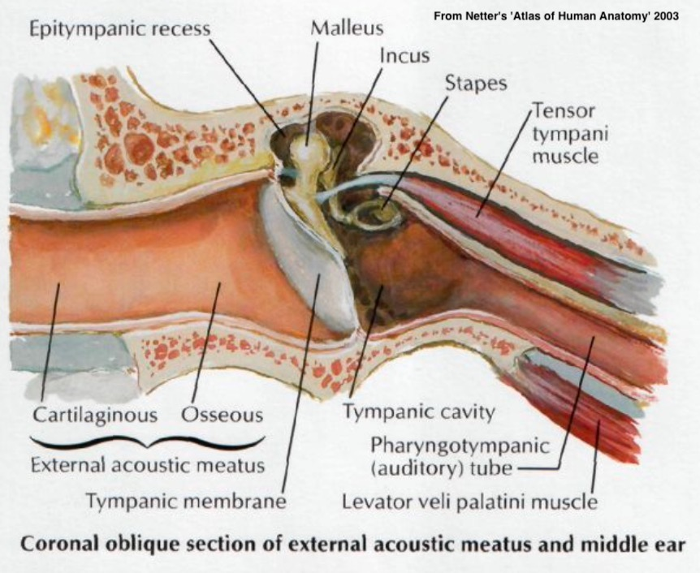
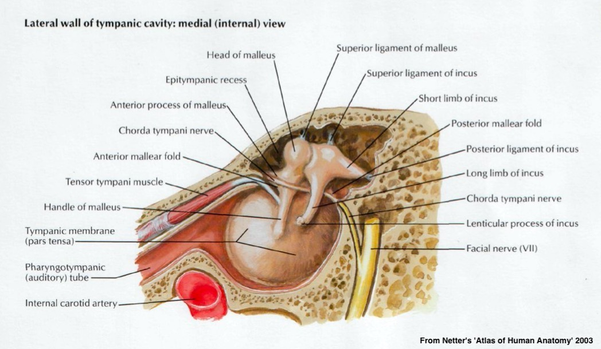
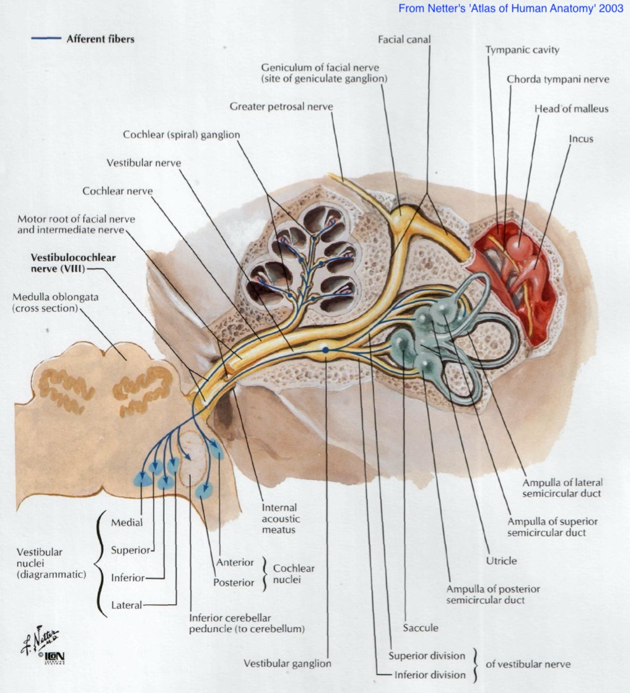
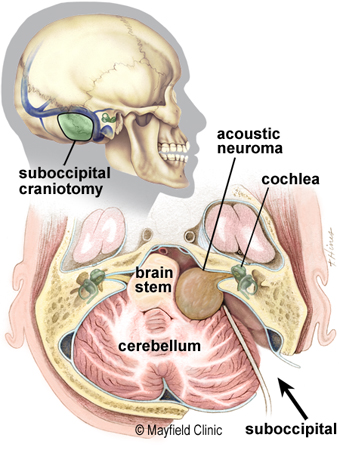
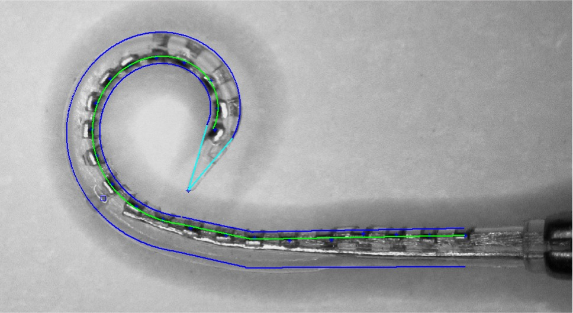
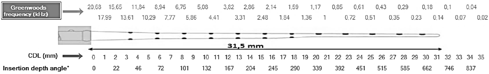

### Notes on the Final Exam - This will look a lot like the midterm, except with more questions - ... and more long-answer questions - It will be cumulative, but weighted towards the post-midterm material - To understand the material after the midterm, you sort of need the stuff before - **Students wanting accommodations should reach out to me ASAP** --- # Surgical Treatment of Hearing Loss ### Will Styler - LIGN 113 --- ### Today's talk is a bit different - The Chapter for this week is amazing - ... as was the audiogram reading chapter - You'll want to make sure you read it - ... and there's no need to repeat the material aloud! --- ### So, today, we'll focus on something the book doesn't discuss as much - How do we 'fix' some of these issues, for folks who feel they want to --- ### Today's Plan - Treating Recurring Otitis Media - Treating Eustachian Tube Dysfunction - Treating Otosclerosis - Treating Acoustic Neuroma - Cochlear Implant Basics and Installations --- ### Will is not an Otolaryngologist! - Please do not treat this as medical advice :) --- ## Treating Recurring Otitis Media --- ### Review: Otitis Media - An infection of the middle ear - Often caused by bad eustachian tubes or inflammation ---  --- ### Treating Otitis Media - Systemic Antibiotics - Myringotomy - Cutting a hole in the eardrum - Tympanostomy Tube Installation --- ### Adult Tympanostomy - Numb the eardrum by using phenol - Cut a slit in the tympanic membrane - Insert the tube into the slit --- ### See it in practice <danger>The below link shows this surgery. There will be blood.</danger> <https://www.youtube.com/watch?v=hFUQs6ae6Fo> --- ### Potential Complications - For kids, general anesthesia - For adults, moving around - [Medial Migration of Tympanostomy Tube](https://pubmed.ncbi.nlm.nih.gov/16814404/) - Often attributed to negative pressure - ... and more! --- ## Treating Eustacian Tube Dysfunction --- ### Eustachian Tube Dysfunction - The Eustachian tube doesn't adequately open - Chronic ear pressure and otitis media <img class="r-stretch" src="hearing/eustachian_tube.jpg"> --- ### Eustachian Tube Dilation - Enter through the nose - Insert a balloon catheter - Inflate catheter to expand the opening - Remove catheter --- ### See it in practice The below link is a CGI rendering of the procedure <https://www.youtube.com/watch?v=hJMort6YCI4&feature=emb_title> <danger>The below link shows this procedure.</danger> <https://www.youtube.com/watch?v=dBln0VwifP8> --- ### Potential Complications - Carotid Complications ---  --- ### Potential Complications Carotid Complications - Inability to access the tube - Overdilated Eustachian tube --- ## Treating Otosclerosis --- ### Otosclerosis - Abnormal growth and stiffening around the stapes, freezing it in place - The treatment for this is removal and replacement of the stapes - This is a 'stapedectomy' - Or the removal of everything but the footplate, with a hole made over the oval window for a prosthesis - This surgery is referred to as a 'stapedotomy' --- ### Stapedotomy <img class="r-stretch" src="hearing/stapedotomy.jpg"> --- ### See it in practice <danger>The below link shows this surgery. There will be blood.</danger> <https://www.youtube.com/watch?v=N6QEGuFgDIc> --- ### Complications - Dislocation of the incus - Perilymph rupture - Other conductive hearing loss --- # Treating Acoustic Neuroma <small>With special thanks to Dr. Frank Farokhi</small> --- ### 'Acoustic Neuroma' - Technically a schwannoma occurring on the 8th nerve - Occurs when one type of cell ('Schwann Cells') grows out of control on the 8th nerve - These can occur spontaneously, or as a symptom of neurofibromatosis --- ### These tumors are generally benign - They don't 'eat into' the nerve - They compress the nerve within the range - Compression hurts bloodflow, which prevents action potentials, leads to demyelination, and damage - *Once removed, full nerve function can be restored!* --- ### This can occur at any point along the 8th Nerve  --- ### Questions for surgical intervention - Where is the tumor located? - Do we have evidence of nerve **damage**, or just compression? - Is hearing recoverable? --- ### Different locations call for different treatment approaches --- ### Radiation Therapy - Targeted beams of radition to kill the tumor tissue only - Most often used when the tumor is far from the brain --- ### The Suboccipital Approach - Used to preserve hearing - Go in from the back of the head, pull aside the brain, and pull the tumor ---  --- ### How does this work? [Here's a schematic view](https://mayfieldclinic.com/pe-acousticsurgery.htm) <danger>The below link shows a brain surgery. There will be blood.</danger> <https://www.youtube.com/watch?v=ialtKy3cuPU> --- ### The Translabyrinthine Approach - "Yeah, hearing's gone already, let's avoid risk to the brain and facial nerve by going in through the cochlea" - This destroys all hearing in that ear. --- ### How does this work? <danger>The below link shows a brain surgery. There will be blood.</danger> <https://www.youtube.com/watch?v=Trz5RG2nsgM> --- ### Complications - Roughly all of them - Facial Nerve Damage - Damage to the 8th nerve - Hearing loss due to cochlear damage --- ### There are many more treatments - ... because there are many more disorders - But these were an interesting subset of disorders - With particularly interesting surgical approaches - ... but one of the most well known surgical interventions is... --- ## Cochlear Implants --- ### Cochlear Implants Intuition - "Why try to restore the outer ear, middle ear, or organ of corti, when we could just stimulate the spiral ganglion ourselves?" - "Let's do all the transduction and processing ourselves and just send signals down the nerve electrically via a wire in the cochlea!" --- ### That last part's harder than it looks! - We could very easily send a binary signal - "Bro, there's sound! It's happening!" - But how do we get frequency information? - The same way that humans do! --- ### CIs take advantage of tonotopic organization! - The electrode has a series of contact points along its length - The electrode is inserted into the scala tympani - Each contact point stimulates a different point along the basilar membrane - *The brain naturally interprets stimulation from different contact points as frequency differences!* --- <img class="r-stretch" src="hearing/ci_diagram.jpg"> ---  ---  [Source (Dhanasingh and Jolly 2017)](https://www.sciencedirect.com/science/article/pii/S0378595517302940) --- <img class="r-stretch" src="hearing/ci_installed.jpg"> --- ### Cochlear Implants transduce sound into nerve impulses! - External hardware analyzes incoming sounds - The sound is broken down into frequency bands - The CI converts these into electric pulses in different bands - These bands correspond to signals from channels on the electrode, positioned according to tonotopic organization --- <img class="r-stretch" src="hearing/ci_installed.jpg"> --- ### The number of 'channels' is a factor - "How many electrodes do we have to stimulate the cochlea?" - You want enough channels to send rich data - ... but not so many that they interfere with each other - This number ranges from 12 to 24 in modern CIs - Too few channels is bad, but it's not 'more channels is more good' --- ### Cochlear Implants bypass the entire auditory physiology! - We don't need a middle ear, because sound is picked up externally - We don't need OHCs because BM/TM movement doesn't matter - We don't need IHCs because the transduction's happening externally - We go straight from the CI's microphone to the spiral ganglion! --- ### Cochlear Implants are very expensive - There are only three makers, with their devices being roughly equivalent - They're often done unilaterally - Costs can range from $30,000-100,000 easily - ... and installing them is a complicated procedure --- ## Installing Cochlear Implants --- <img class="r-stretch" src="hearing/ci_diagram.jpg"> --- ### Installing Cochlear Implants - Drill a hole into the temporal bone into the middle ear - Open the round window (generally!) - Insert the electrode (gently) --- <img class="r-stretch" src="hearing/ci_inscala.jpg"> --- ### Insertion Depth is a concern! <img class="r-stretch" src="hearing/ci_insertion.jpg"> --- ### Different people have different experiences - Differences in cochlear anatomy - Damage, malformation, or trauma to the cochlea - This can affect insertion depth, proximity to nerves, and more - This is one of the many variables in CI outcomes --- ### Installing CIs, continued - Tuck the sub-dermal part into a skin pouch - Fill the drilled hole with grafted tissue - Stitch them up --- ### Want to see how the surgery works? <danger>The below link is a link to an actual surgery. There will be blood and incisions and drilling. You have been warned.</danger> <https://www.youtube.com/watch?v=PFYvKY8xgUQ> --- ### This isn't a one-time thing - CI's have a lifetime of around 20 years - Most people will need to have this happen again - Trauma to the cochlea during implantation is Bad™ - Yet another reason why this isn't a 'miracle cure for all Deaf people' --- ## What do the outcomes for CI patients look like? - Next time! --- ### Wrapping up - There are many surgical interventions which can be helpful - This is very fiddly, detailed, and precise work - CIs are amazing bits of technology - ... and installing them is very difficult --- <huge>Thank you!</huge>